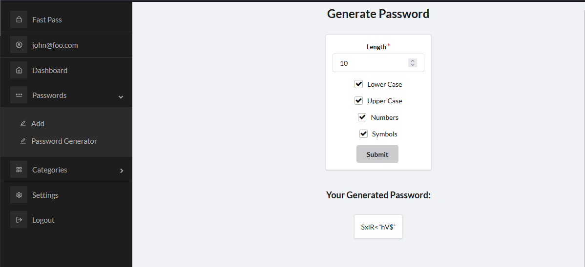
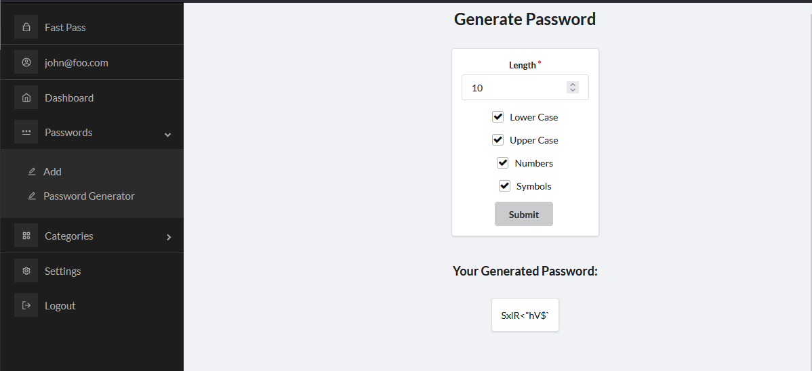

FastPass Password Manager Application
The main feature of Fast Pass is its ability to store user passwords. Users can create accounts on our FastPass website and add multiple password entries. These entries, in addition to the passwords themselves, include other details such as site name, address, username, extra notes, and category type (social, retail, entertainment, and miscellaneous). This information is displayed on a user’s dashboard. The list of passwords can be further sorted by category. The total number of passwords overall and the number of passwords in each category are also displayed. To assist users with password creation, we developed a password generator that allows users to specify multiple conditions such as password length, special characters, and uppercase to create their ideal password. Users may also edit their password entries and modify any details where necessary. They may use our hyperlink display in the dashboard password list to simply click on the name of their password’s site and visit the link in their browser. Before this, users can press a button to copy the password to the clipboard. In addition, FastPass also allows users to export their password list into a .csv to facilitate offline storage. For security purposes, users may optionally enable multi-factor authentication. This additional layer of logging in can be activated for an account in the form of two-factor authentication by scanning a generated QR code from the “2FA settings” page into the “Google Authenticator” mobile app and inputting the subsequent one-time six-digit code. Afterward, any future log-ins will require inputting the one-time code generated from the app alongside the correct email and password. Users will also have the ability to disable 2FA should they so choose in the future. Furthermore, users will be automatically logged out of their session after 30 minutes of inactivity.

Achieved a secure approach to storing and managing password items in the NoSQL database, ensuring confidentiality by concealing passwords in the terminal as "undefined" during website runtime and abstaining from explicit presentation within the dashboard. Additionally, successfully addressed indirect object reference vulnerabilities, safeguarding against unauthorized access to password items via the "Edit Login" form. The team prioritized the protection of sensitive password information, recognizing its inherent value. Furthermore, successfully implemented a feature enabling users to export passwords as a .csv file, aligning with our initial vision of providing offline access to password data.


Successfully integrated two-factor authentication (2FA) into our application using Meteor's "accounts 2-fa" package. The implementation presented a challenge due to the recent introduction of the package with Meteor 2.7, resulting in limited documentation for its functions and methods. Despite this hurdle, we managed to empower users with the option to activate 2FA for their accounts, enhancing the overall security posture of our applicatio
 

Implemented a robust password generator within our password manager application, offering customizable character length and the option to include or exclude lowercase letters, uppercase letters, numbers, and symbols. Although we couldn't integrate it in this version, a planned enhancement is the ability to conveniently copy the generated password to the clipboard, streamlining user accessibility and convenience.